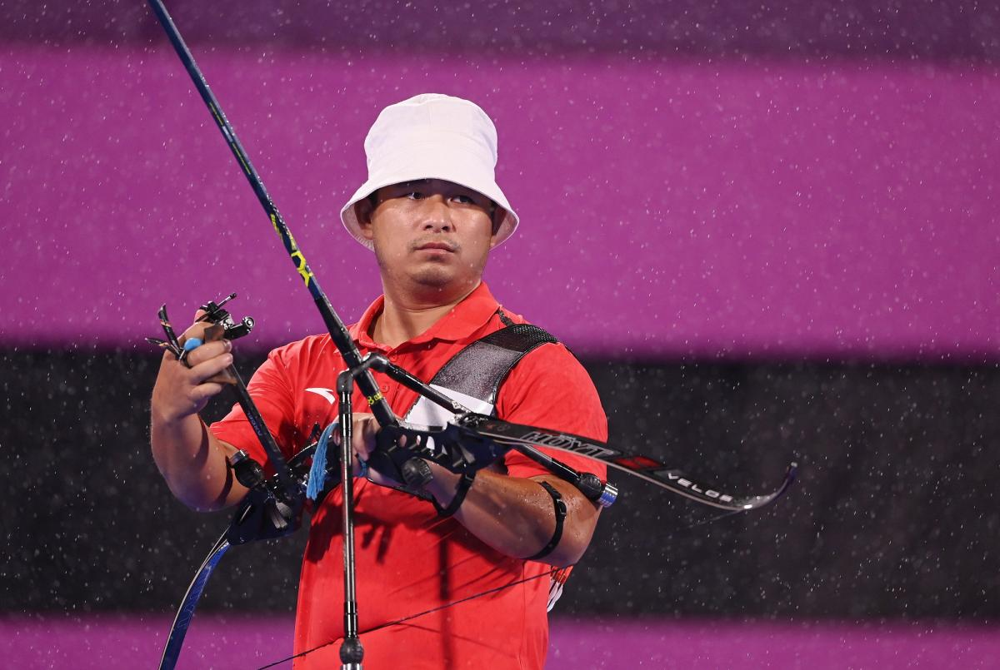

RPC win gold medal in archery wrap-up
The Russian Paralympic Committee won gold in the mixed team recurve, the last archery event of the Tokyo 2020 Paralympic Games. Debutants Margarita Sidorenko and Kirill Smirnov defeated the Italian team 5-4 in the final at a rain-soaked Yumenoshima Park on Saturday, 4 September. Smirnov sealed the victory with a nine in a shoot-off triumph against the Italians Elisabetta Mijno and Stefano Trevisani. In the semifinal, the RPC pair defeated strong favourites China by the same score. “We cannot understand our feelings and thoughts right now, maybe tomorrow we will know how we feel about it. (Winning the) shoot-off against China gave us a lot of confidence,” Smirnov told the Olympic Information Service (OIS). Three-time women’s individual recurve Paralympic Games champion Zahra NEMATI (IRI) and her mixed team partner Gholamreza RAHIMI (IRI) lost to Italy in their semifinal, with RAHIMI failing to score with his second arrow in the third set after it slipped from his bow. “I learned a lot in this place (Yumenoshima Park) and I'm happy that I brought him (TRAVISANI) on this adventure. There is a lot of satisfaction, but losing gold is a little bit irritating,” affirmed Minjo, who only shot an eight on the decisive shoot-off with RPC. The bronze medal ended with Rio 2016 champions Zhao Lixue and Wu Chunyan, from China. They beat Iranians Zahra Nemati, a gold medallist in the women's individual recurve at these Games, and Gholamreza Rahimi 6-2. "The day was full of surprises and many uncertainties (which) made my performance go up and down," explained Zhao. Despite the bronze medal, China stayed on top with eight medals, including four golds out of a possible nine. RPC's first archery gold medal of Tokyo 2020 moves them up to fourth in the medal table for this sport. In total, 139 archers from 42 NPCs competed across the nine days of competition at Yumenoshima Park.